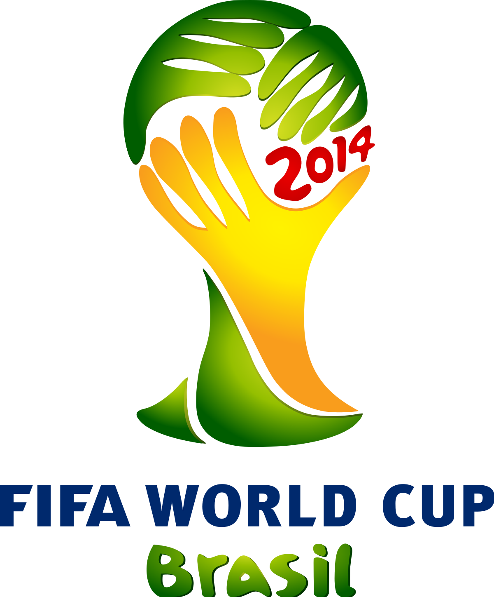
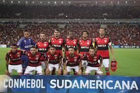
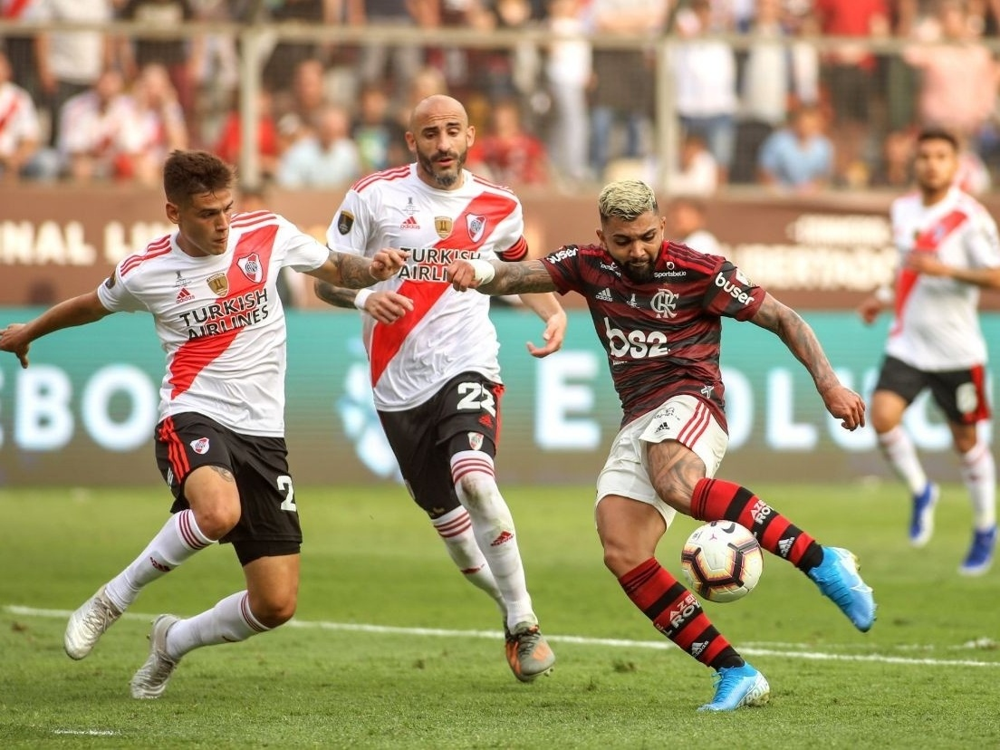
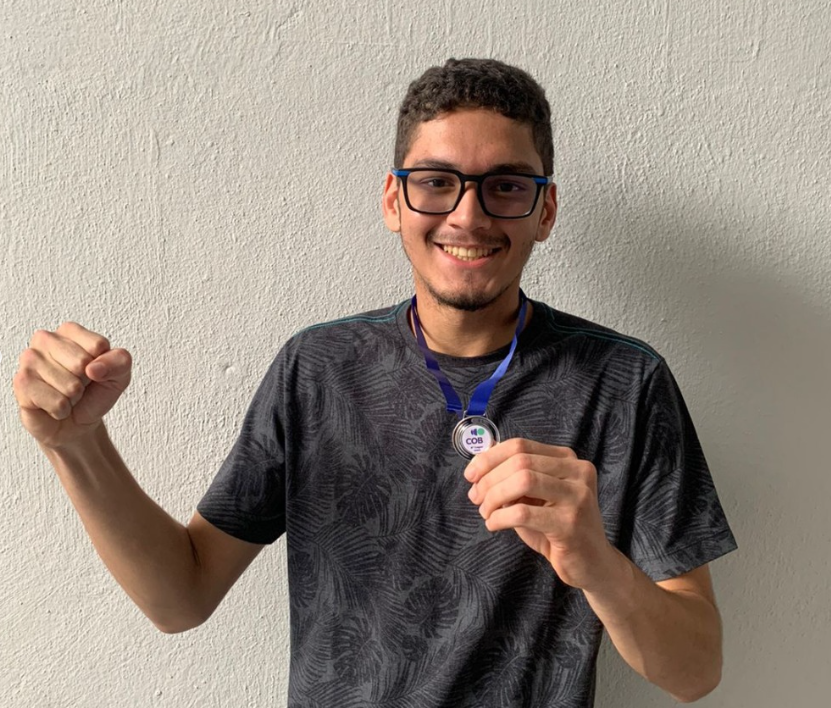
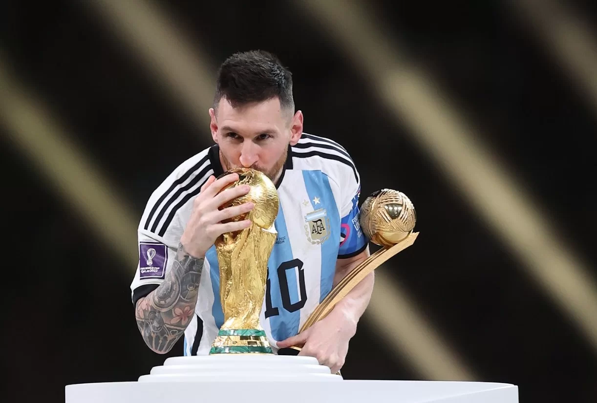

Quando eu era criança, em torno de 8 anos, eu até via futebol e jogava jogos de futebol, como PES 2013. Porém, eu nunca me aprofundei tanto, só via por ver mesmo.
Os anos foram passando e na copa de 2014 no Brasil, quando eu tinha uns 10/11 anos, eu assisti e torci com a minha família. O 7x1 foi um baque enorme, mas foi aí que eu começei a me interessar um pouco mais com o futebol.

A copa de 2014 foi a primeira que eu realmente assisti
Em meados de 2015/2016, me interessei mais por futebol. Começei a acompanhar jogos da Liga dos Campeões, do Brasileirão, das ligas européias, e vários outros. Inclusive, um gol que me marcou foi um gol do Messi contra o Bayern de Munique em 2015, na Liga dos Campeões.

Gol do Messi contra o Bayern de Munique
Foi em 2017, que definitivamente eu começei a gostar de futebol. Acompanha tudo, principalmente o meu time de coração: o Flamengo. Nesse ano, o Flamengo acabou sendo vice da Copa do Brasil e Sul-Americana, então noi foi um ano tão bom assim.
Porém, mesmo assim, eu assistia a outros jogos, me aprofundava mais e, inclusive, começei a jogar futebol, pois na época eu era bem ruim. Então, começei a treinar mais para melhorar meu jogo.

Flamengo na final da Sul-Americana em 2017
Em termos futebolísticos, o melhor ano foi 2019, quando o Flamengo finalmente voltou a vencer a Libertadores depois de 30 anos. Era um dos melhores times do clube na história e definitivamente foi um dos anos que eu mais comemorei.
2019 eu também joguei o primeiro interclasse da escola, quando eu estava no 9º ano. Não fizemos muita coisa, mas foi legal pela experiência.

Um dos gols que mais comemorei - Gabriel na final da Libertadores 2019
Agora para 2022. Foi um ano marcante por dois motivos: o último interclasse da minha escola e a Copa do Mundo de 2022.
Os times do interclasse de 2022 foram misturas de turmas diferentes, fazendo com que o entrosamento fique diferente. Foi muito frenético, e meu time acabou ficando com o 2º lugar, em jogo disputado na final. Foi uma experiência incrível.

Agora, para a copa que eu mais assisti e vibrei na minha vida por enquanto. Eu assistia a todos os jogos, desde Brasil x Suécia a Dinamarca x Tunísia. Inclusive, ligavámos os projetores da escola para assistir os jogos de manhã.
As quartas de final do Brasil contra a Croácia foi a eliminação que mais doeu, pois eu acreditava que a seleção seria campeã. O gol que o Neymar fez foi o que eu mais comemorei na minha vida, então foi uma tristeza quando o Brasil foi eliminado nos pênaltis.
Mas nem tudo foi ruim, pois teve várias partidas que eu assisti e Lionel Messi, o jogador que eu mais admiro, foi campeão pela Argentina em um dos melhores jogos que eu já vi.
Atualmente, continuo acompanhando muito futebol e espero que tenha oportunidades mais felizes com o esporte que eu mais gosto.

A Copa do Mundo teve um desfecho feliz no final das contas